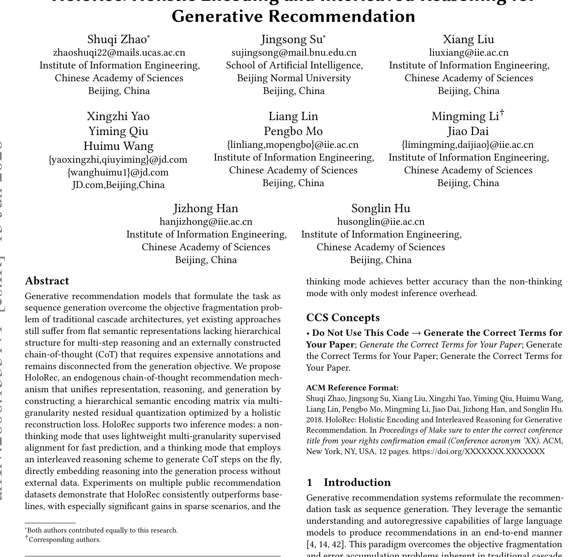
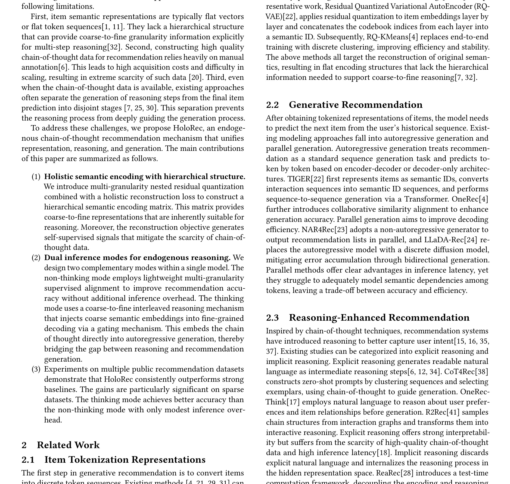
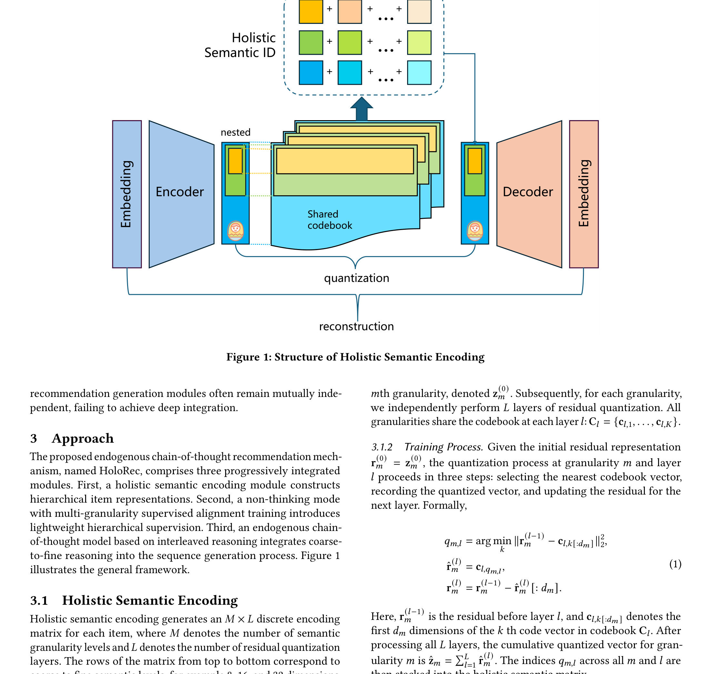
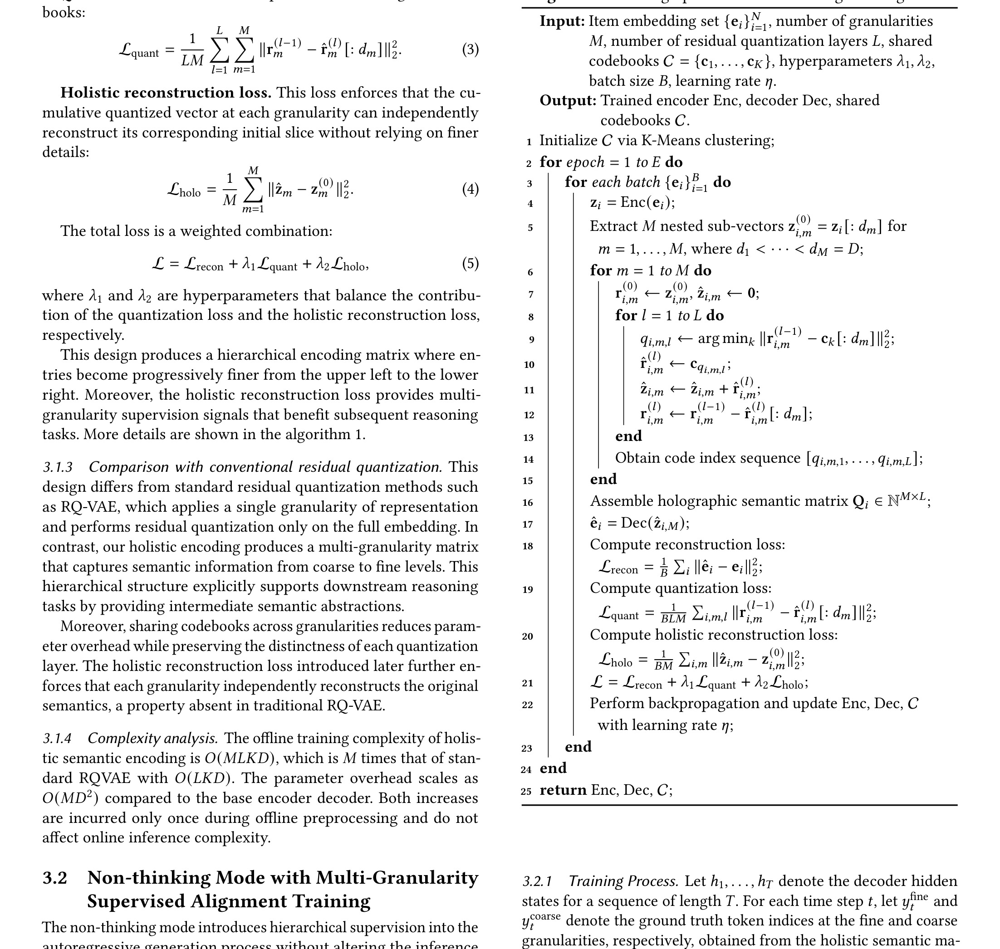

HoloRec: Holistic Encoding and Interleaved Reasoning for Generative Recommendation
HoloRec: Holistic Encoding and Interleaved Reasoning for Generative Recommendation 这篇论文的中文读法是“HoloRec：层次编码与交错推理的生成式推荐”。论文入口是 arXiv:2606.15331，公开日期按 arXiv 记录为 2026-06-13，类别为 cs.IR, cs.AI。作者包括 Shuqi Zhao, Jingsong Su, Xiang Liu, Xingzhi Yao, Yiming Qiu, Huimu Wang, Liang Lin, Pengbo Mo 等；本轮机构口径暂写为多校作者，因为 arXiv 元数据不提供稳定的一作机构字段，未用机构名做未经核验的推断。代码/项目页状态：本轮只核验 arXiv 条目与 PDF，未确认独立代码仓库。本文在日报中归入“推荐算法”，入选原因是：把生成式推荐里的扁平语义表示和外部 CoT 标注问题合在一起解决，用多粒度嵌套残差量化构造层次语义编码矩阵，并在推理时交错生成 reasoning steps。
最重要的背景/问题：把生成式推荐里的扁平语义表示和外部 CoT 标注问题合在一起解决，用多粒度嵌套残差量化构造层次语义编码矩阵，并在推理时交错生成 reasoning steps。这不是简单追求单点指标提升，而是把一个过去被放在系统工程里的中间接口变成可训练、可观测、可消融的研究对象。
1. 背景和问题
从任务接口变化看，HoloRec 讨论的是一个在 2026 年推荐系统和大模型系统里越来越常见的矛盾：模型组件变强以后，真正限制效果的经常不是最终 decoder 或 ranking head，而是中间状态如何被定义、更新和约束。论文摘要的核心信息是：Generative recommendation models that formulate the task as sequence generation overcome the objective fragmentation problem of traditional cascade architectures, yet existing approaches still suffer from flat semantic representations lacking hierarchical structure for multi-step reasoning and an externally constructed chain-of-thought (CoT) that requires expensive annotations and remains disconnected from the generation objective. We propose HoloRec, an endogenous chain-of-thought recommendation mechanism that uni。这说明作者并不满足于把现有 pipeline 再堆一层模型，而是试图让数据、状态、奖励和评估之间有更清楚的责任边界。第 1 个背景层面尤其值得关注，因为它影响复现时应该记录哪些日志、如何划分训练样本、以及线上指标波动时能否定位到具体模块。
从旧方法隐含假设看，HoloRec 讨论的是一个在 2026 年推荐系统和大模型系统里越来越常见的矛盾：模型组件变强以后，真正限制效果的经常不是最终 decoder 或 ranking head，而是中间状态如何被定义、更新和约束。论文摘要的核心信息是：Generative recommendation models that formulate the task as sequence generation overcome the objective fragmentation problem of traditional cascade architectures, yet existing approaches still suffer from flat semantic representations lacking hierarchical structure for multi-step reasoning and an externally constructed chain-of-thought (CoT) that requires expensive annotations and remains disconnected from the generation objective. We propose HoloRec, an endogenous chain-of-thought recommendation mechanism that uni。这说明作者并不满足于把现有 pipeline 再堆一层模型，而是试图让数据、状态、奖励和评估之间有更清楚的责任边界。第 2 个背景层面尤其值得关注，因为它影响复现时应该记录哪些日志、如何划分训练样本、以及线上指标波动时能否定位到具体模块。
从线上约束压力看，HoloRec 讨论的是一个在 2026 年推荐系统和大模型系统里越来越常见的矛盾：模型组件变强以后，真正限制效果的经常不是最终 decoder 或 ranking head，而是中间状态如何被定义、更新和约束。论文摘要的核心信息是：Generative recommendation models that formulate the task as sequence generation overcome the objective fragmentation problem of traditional cascade architectures, yet existing approaches still suffer from flat semantic representations lacking hierarchical structure for multi-step reasoning and an externally constructed chain-of-thought (CoT) that requires expensive annotations and remains disconnected from the generation objective. We propose HoloRec, an endogenous chain-of-thought recommendation mechanism that uni。这说明作者并不满足于把现有 pipeline 再堆一层模型，而是试图让数据、状态、奖励和评估之间有更清楚的责任边界。第 3 个背景层面尤其值得关注，因为它影响复现时应该记录哪些日志、如何划分训练样本、以及线上指标波动时能否定位到具体模块。
从评估口径缺口看，HoloRec 讨论的是一个在 2026 年推荐系统和大模型系统里越来越常见的矛盾：模型组件变强以后，真正限制效果的经常不是最终 decoder 或 ranking head，而是中间状态如何被定义、更新和约束。论文摘要的核心信息是：Generative recommendation models that formulate the task as sequence generation overcome the objective fragmentation problem of traditional cascade architectures, yet existing approaches still suffer from flat semantic representations lacking hierarchical structure for multi-step reasoning and an externally constructed chain-of-thought (CoT) that requires expensive annotations and remains disconnected from the generation objective. We propose HoloRec, an endogenous chain-of-thought recommendation mechanism that uni。这说明作者并不满足于把现有 pipeline 再堆一层模型，而是试图让数据、状态、奖励和评估之间有更清楚的责任边界。第 4 个背景层面尤其值得关注，因为它影响复现时应该记录哪些日志、如何划分训练样本、以及线上指标波动时能否定位到具体模块。
从与推荐/Agent 系统的连接看，HoloRec 讨论的是一个在 2026 年推荐系统和大模型系统里越来越常见的矛盾：模型组件变强以后，真正限制效果的经常不是最终 decoder 或 ranking head，而是中间状态如何被定义、更新和约束。论文摘要的核心信息是：Generative recommendation models that formulate the task as sequence generation overcome the objective fragmentation problem of traditional cascade architectures, yet existing approaches still suffer from flat semantic representations lacking hierarchical structure for multi-step reasoning and an externally constructed chain-of-thought (CoT) that requires expensive annotations and remains disconnected from the generation objective. We propose HoloRec, an endogenous chain-of-thought recommendation mechanism that uni。这说明作者并不满足于把现有 pipeline 再堆一层模型，而是试图让数据、状态、奖励和评估之间有更清楚的责任边界。第 5 个背景层面尤其值得关注，因为它影响复现时应该记录哪些日志、如何划分训练样本、以及线上指标波动时能否定位到具体模块。

这张来自原始 PDF 的裁图放在背景章，是为了把论文问题从文字摘要落到实际版面对象上。读者不应只把它当作配图，而应检查其中出现的任务输入、中间状态、评价目标和实验对象。对 HoloRec 来说，真正值得迁移的是这种接口化表达：如果业务系统里没有对应的状态字段、样本来源、生命周期标记或 reward 拆分，那么论文里的主张即使在离线数据上成立，也很难稳定复用。
2. 方法
2.1 层次语义编码矩阵
层次语义编码矩阵 是 HoloRec 方法链路中的第 1 个关键模块。它承担的职责不是简单增加参数量，而是把论文问题拆成可学习的子接口：输入侧要知道哪些信息被允许进入模型，中间侧要知道状态如何压缩、擦除、增强或对齐，输出侧要知道奖励和指标怎样回传到对应阶段。这个模块如果被替换为普通拼接、统一 loss 或单一后处理，论文最核心的机制就会退化成经验技巧。
围绕输入输出边界展开，层次语义编码矩阵 的设计需要回答一个具体问题：系统在什么时刻知道什么，以及这些信息如何影响后续决策。以 HoloRec 为例，作者把“把生成式推荐里的扁平语义表示和外部 CoT 标注问题合在一起解决，用多粒度嵌套残差量化构造层次语义编码矩阵，并在推理时交错生成 reasoning steps。”落实到模块级流程，因此复现时不能只看最终指标。更稳妥的做法是为该模块建立独立的离线诊断：输入覆盖率、状态更新频率、reward 或 label 的噪声来源、关键参数的敏感性，以及和主任务指标之间的相关性。这样做的好处是，当线上出现 head/tail 用户差异、长上下文延迟波动或 Agent 多步任务失败时，可以判断问题来自信号缺失、状态漂移、信用分配错误，还是评估目标本身没有覆盖真实需求。
围绕训练信号来源展开，层次语义编码矩阵 的设计需要回答一个具体问题：系统在什么时刻知道什么，以及这些信息如何影响后续决策。以 HoloRec 为例，作者把“把生成式推荐里的扁平语义表示和外部 CoT 标注问题合在一起解决，用多粒度嵌套残差量化构造层次语义编码矩阵，并在推理时交错生成 reasoning steps。”落实到模块级流程，因此复现时不能只看最终指标。更稳妥的做法是为该模块建立独立的离线诊断：输入覆盖率、状态更新频率、reward 或 label 的噪声来源、关键参数的敏感性，以及和主任务指标之间的相关性。这样做的好处是，当线上出现 head/tail 用户差异、长上下文延迟波动或 Agent 多步任务失败时，可以判断问题来自信号缺失、状态漂移、信用分配错误，还是评估目标本身没有覆盖真实需求。
围绕与基线的区别展开，层次语义编码矩阵 的设计需要回答一个具体问题：系统在什么时刻知道什么，以及这些信息如何影响后续决策。以 HoloRec 为例，作者把“把生成式推荐里的扁平语义表示和外部 CoT 标注问题合在一起解决，用多粒度嵌套残差量化构造层次语义编码矩阵，并在推理时交错生成 reasoning steps。”落实到模块级流程，因此复现时不能只看最终指标。更稳妥的做法是为该模块建立独立的离线诊断：输入覆盖率、状态更新频率、reward 或 label 的噪声来源、关键参数的敏感性，以及和主任务指标之间的相关性。这样做的好处是，当线上出现 head/tail 用户差异、长上下文延迟波动或 Agent 多步任务失败时，可以判断问题来自信号缺失、状态漂移、信用分配错误，还是评估目标本身没有覆盖真实需求。
围绕工程可观测性展开，层次语义编码矩阵 的设计需要回答一个具体问题：系统在什么时刻知道什么，以及这些信息如何影响后续决策。以 HoloRec 为例，作者把“把生成式推荐里的扁平语义表示和外部 CoT 标注问题合在一起解决，用多粒度嵌套残差量化构造层次语义编码矩阵，并在推理时交错生成 reasoning steps。”落实到模块级流程，因此复现时不能只看最终指标。更稳妥的做法是为该模块建立独立的离线诊断：输入覆盖率、状态更新频率、reward 或 label 的噪声来源、关键参数的敏感性，以及和主任务指标之间的相关性。这样做的好处是，当线上出现 head/tail 用户差异、长上下文延迟波动或 Agent 多步任务失败时，可以判断问题来自信号缺失、状态漂移、信用分配错误，还是评估目标本身没有覆盖真实需求。
围绕失败模式展开，层次语义编码矩阵 的设计需要回答一个具体问题：系统在什么时刻知道什么，以及这些信息如何影响后续决策。以 HoloRec 为例，作者把“把生成式推荐里的扁平语义表示和外部 CoT 标注问题合在一起解决，用多粒度嵌套残差量化构造层次语义编码矩阵，并在推理时交错生成 reasoning steps。”落实到模块级流程，因此复现时不能只看最终指标。更稳妥的做法是为该模块建立独立的离线诊断：输入覆盖率、状态更新频率、reward 或 label 的噪声来源、关键参数的敏感性，以及和主任务指标之间的相关性。这样做的好处是，当线上出现 head/tail 用户差异、长上下文延迟波动或 Agent 多步任务失败时，可以判断问题来自信号缺失、状态漂移、信用分配错误，还是评估目标本身没有覆盖真实需求。

这张图表跟在 层次语义编码矩阵 之后，是因为它承担方法证据锚点。阅读时要优先看箭头、分组和对照关系，而不是只看模块名字。对于推荐论文，箭头通常对应用户历史、item 表示、候选集和多目标 loss 之间的信息流；对于 LLM/Agent 论文，箭头通常对应上下文、缓存、检索证据、工具观察和 reward 的生命周期。若工程实现中某个箭头无法被日志复原，就说明这部分机制还没有真正进入可调试系统。
2.2 多粒度嵌套残差量化
多粒度嵌套残差量化 是 HoloRec 方法链路中的第 2 个关键模块。它承担的职责不是简单增加参数量，而是把论文问题拆成可学习的子接口：输入侧要知道哪些信息被允许进入模型，中间侧要知道状态如何压缩、擦除、增强或对齐，输出侧要知道奖励和指标怎样回传到对应阶段。这个模块如果被替换为普通拼接、统一 loss 或单一后处理，论文最核心的机制就会退化成经验技巧。
符号解释：这个公式是我在笔记里保留的核心抽象。它不要求每个实现都使用完全相同的符号，但提醒复现者必须检查变量来源：哪些量来自当前请求，哪些量来自历史状态，哪些量来自离线构造，哪些量只在评估阶段可见。若把不可在线获得的量误用到推理阶段，离线提升就会变成部署时的数据泄漏或延迟风险。
围绕输入输出边界展开，多粒度嵌套残差量化 的设计需要回答一个具体问题：系统在什么时刻知道什么，以及这些信息如何影响后续决策。以 HoloRec 为例，作者把“把生成式推荐里的扁平语义表示和外部 CoT 标注问题合在一起解决，用多粒度嵌套残差量化构造层次语义编码矩阵，并在推理时交错生成 reasoning steps。”落实到模块级流程，因此复现时不能只看最终指标。更稳妥的做法是为该模块建立独立的离线诊断：输入覆盖率、状态更新频率、reward 或 label 的噪声来源、关键参数的敏感性，以及和主任务指标之间的相关性。这样做的好处是，当线上出现 head/tail 用户差异、长上下文延迟波动或 Agent 多步任务失败时，可以判断问题来自信号缺失、状态漂移、信用分配错误，还是评估目标本身没有覆盖真实需求。
围绕训练信号来源展开，多粒度嵌套残差量化 的设计需要回答一个具体问题：系统在什么时刻知道什么，以及这些信息如何影响后续决策。以 HoloRec 为例，作者把“把生成式推荐里的扁平语义表示和外部 CoT 标注问题合在一起解决，用多粒度嵌套残差量化构造层次语义编码矩阵，并在推理时交错生成 reasoning steps。”落实到模块级流程，因此复现时不能只看最终指标。更稳妥的做法是为该模块建立独立的离线诊断：输入覆盖率、状态更新频率、reward 或 label 的噪声来源、关键参数的敏感性，以及和主任务指标之间的相关性。这样做的好处是，当线上出现 head/tail 用户差异、长上下文延迟波动或 Agent 多步任务失败时，可以判断问题来自信号缺失、状态漂移、信用分配错误，还是评估目标本身没有覆盖真实需求。
围绕与基线的区别展开，多粒度嵌套残差量化 的设计需要回答一个具体问题：系统在什么时刻知道什么，以及这些信息如何影响后续决策。以 HoloRec 为例，作者把“把生成式推荐里的扁平语义表示和外部 CoT 标注问题合在一起解决，用多粒度嵌套残差量化构造层次语义编码矩阵，并在推理时交错生成 reasoning steps。”落实到模块级流程，因此复现时不能只看最终指标。更稳妥的做法是为该模块建立独立的离线诊断：输入覆盖率、状态更新频率、reward 或 label 的噪声来源、关键参数的敏感性，以及和主任务指标之间的相关性。这样做的好处是，当线上出现 head/tail 用户差异、长上下文延迟波动或 Agent 多步任务失败时，可以判断问题来自信号缺失、状态漂移、信用分配错误，还是评估目标本身没有覆盖真实需求。
围绕工程可观测性展开，多粒度嵌套残差量化 的设计需要回答一个具体问题：系统在什么时刻知道什么，以及这些信息如何影响后续决策。以 HoloRec 为例，作者把“把生成式推荐里的扁平语义表示和外部 CoT 标注问题合在一起解决，用多粒度嵌套残差量化构造层次语义编码矩阵，并在推理时交错生成 reasoning steps。”落实到模块级流程，因此复现时不能只看最终指标。更稳妥的做法是为该模块建立独立的离线诊断：输入覆盖率、状态更新频率、reward 或 label 的噪声来源、关键参数的敏感性，以及和主任务指标之间的相关性。这样做的好处是，当线上出现 head/tail 用户差异、长上下文延迟波动或 Agent 多步任务失败时，可以判断问题来自信号缺失、状态漂移、信用分配错误，还是评估目标本身没有覆盖真实需求。
围绕失败模式展开，多粒度嵌套残差量化 的设计需要回答一个具体问题：系统在什么时刻知道什么，以及这些信息如何影响后续决策。以 HoloRec 为例，作者把“把生成式推荐里的扁平语义表示和外部 CoT 标注问题合在一起解决，用多粒度嵌套残差量化构造层次语义编码矩阵，并在推理时交错生成 reasoning steps。”落实到模块级流程，因此复现时不能只看最终指标。更稳妥的做法是为该模块建立独立的离线诊断：输入覆盖率、状态更新频率、reward 或 label 的噪声来源、关键参数的敏感性，以及和主任务指标之间的相关性。这样做的好处是，当线上出现 head/tail 用户差异、长上下文延迟波动或 Agent 多步任务失败时，可以判断问题来自信号缺失、状态漂移、信用分配错误，还是评估目标本身没有覆盖真实需求。

这张图表跟在 多粒度嵌套残差量化 之后，是因为它承担方法证据锚点。阅读时要优先看箭头、分组和对照关系，而不是只看模块名字。对于推荐论文，箭头通常对应用户历史、item 表示、候选集和多目标 loss 之间的信息流；对于 LLM/Agent 论文，箭头通常对应上下文、缓存、检索证据、工具观察和 reward 的生命周期。若工程实现中某个箭头无法被日志复原，就说明这部分机制还没有真正进入可调试系统。
2.3 Non-thinking 与 thinking 双模式
Non-thinking 与 thinking 双模式 是 HoloRec 方法链路中的第 3 个关键模块。它承担的职责不是简单增加参数量，而是把论文问题拆成可学习的子接口：输入侧要知道哪些信息被允许进入模型，中间侧要知道状态如何压缩、擦除、增强或对齐，输出侧要知道奖励和指标怎样回传到对应阶段。这个模块如果被替换为普通拼接、统一 loss 或单一后处理，论文最核心的机制就会退化成经验技巧。
围绕输入输出边界展开，Non-thinking 与 thinking 双模式 的设计需要回答一个具体问题：系统在什么时刻知道什么，以及这些信息如何影响后续决策。以 HoloRec 为例，作者把“把生成式推荐里的扁平语义表示和外部 CoT 标注问题合在一起解决，用多粒度嵌套残差量化构造层次语义编码矩阵，并在推理时交错生成 reasoning steps。”落实到模块级流程，因此复现时不能只看最终指标。更稳妥的做法是为该模块建立独立的离线诊断：输入覆盖率、状态更新频率、reward 或 label 的噪声来源、关键参数的敏感性，以及和主任务指标之间的相关性。这样做的好处是，当线上出现 head/tail 用户差异、长上下文延迟波动或 Agent 多步任务失败时，可以判断问题来自信号缺失、状态漂移、信用分配错误，还是评估目标本身没有覆盖真实需求。
围绕训练信号来源展开，Non-thinking 与 thinking 双模式 的设计需要回答一个具体问题：系统在什么时刻知道什么，以及这些信息如何影响后续决策。以 HoloRec 为例，作者把“把生成式推荐里的扁平语义表示和外部 CoT 标注问题合在一起解决，用多粒度嵌套残差量化构造层次语义编码矩阵，并在推理时交错生成 reasoning steps。”落实到模块级流程，因此复现时不能只看最终指标。更稳妥的做法是为该模块建立独立的离线诊断：输入覆盖率、状态更新频率、reward 或 label 的噪声来源、关键参数的敏感性，以及和主任务指标之间的相关性。这样做的好处是，当线上出现 head/tail 用户差异、长上下文延迟波动或 Agent 多步任务失败时，可以判断问题来自信号缺失、状态漂移、信用分配错误，还是评估目标本身没有覆盖真实需求。
围绕与基线的区别展开，Non-thinking 与 thinking 双模式 的设计需要回答一个具体问题：系统在什么时刻知道什么，以及这些信息如何影响后续决策。以 HoloRec 为例，作者把“把生成式推荐里的扁平语义表示和外部 CoT 标注问题合在一起解决，用多粒度嵌套残差量化构造层次语义编码矩阵，并在推理时交错生成 reasoning steps。”落实到模块级流程，因此复现时不能只看最终指标。更稳妥的做法是为该模块建立独立的离线诊断：输入覆盖率、状态更新频率、reward 或 label 的噪声来源、关键参数的敏感性，以及和主任务指标之间的相关性。这样做的好处是，当线上出现 head/tail 用户差异、长上下文延迟波动或 Agent 多步任务失败时，可以判断问题来自信号缺失、状态漂移、信用分配错误，还是评估目标本身没有覆盖真实需求。
围绕工程可观测性展开，Non-thinking 与 thinking 双模式 的设计需要回答一个具体问题：系统在什么时刻知道什么，以及这些信息如何影响后续决策。以 HoloRec 为例，作者把“把生成式推荐里的扁平语义表示和外部 CoT 标注问题合在一起解决，用多粒度嵌套残差量化构造层次语义编码矩阵，并在推理时交错生成 reasoning steps。”落实到模块级流程，因此复现时不能只看最终指标。更稳妥的做法是为该模块建立独立的离线诊断：输入覆盖率、状态更新频率、reward 或 label 的噪声来源、关键参数的敏感性，以及和主任务指标之间的相关性。这样做的好处是，当线上出现 head/tail 用户差异、长上下文延迟波动或 Agent 多步任务失败时，可以判断问题来自信号缺失、状态漂移、信用分配错误，还是评估目标本身没有覆盖真实需求。
围绕失败模式展开，Non-thinking 与 thinking 双模式 的设计需要回答一个具体问题：系统在什么时刻知道什么，以及这些信息如何影响后续决策。以 HoloRec 为例，作者把“把生成式推荐里的扁平语义表示和外部 CoT 标注问题合在一起解决，用多粒度嵌套残差量化构造层次语义编码矩阵，并在推理时交错生成 reasoning steps。”落实到模块级流程，因此复现时不能只看最终指标。更稳妥的做法是为该模块建立独立的离线诊断：输入覆盖率、状态更新频率、reward 或 label 的噪声来源、关键参数的敏感性，以及和主任务指标之间的相关性。这样做的好处是，当线上出现 head/tail 用户差异、长上下文延迟波动或 Agent 多步任务失败时，可以判断问题来自信号缺失、状态漂移、信用分配错误，还是评估目标本身没有覆盖真实需求。
2.4 稀疏场景和推理成本评估
稀疏场景和推理成本评估 是 HoloRec 方法链路中的第 4 个关键模块。它承担的职责不是简单增加参数量，而是把论文问题拆成可学习的子接口：输入侧要知道哪些信息被允许进入模型，中间侧要知道状态如何压缩、擦除、增强或对齐，输出侧要知道奖励和指标怎样回传到对应阶段。这个模块如果被替换为普通拼接、统一 loss 或单一后处理，论文最核心的机制就会退化成经验技巧。
围绕输入输出边界展开，稀疏场景和推理成本评估 的设计需要回答一个具体问题：系统在什么时刻知道什么，以及这些信息如何影响后续决策。以 HoloRec 为例，作者把“把生成式推荐里的扁平语义表示和外部 CoT 标注问题合在一起解决，用多粒度嵌套残差量化构造层次语义编码矩阵，并在推理时交错生成 reasoning steps。”落实到模块级流程，因此复现时不能只看最终指标。更稳妥的做法是为该模块建立独立的离线诊断：输入覆盖率、状态更新频率、reward 或 label 的噪声来源、关键参数的敏感性，以及和主任务指标之间的相关性。这样做的好处是，当线上出现 head/tail 用户差异、长上下文延迟波动或 Agent 多步任务失败时，可以判断问题来自信号缺失、状态漂移、信用分配错误，还是评估目标本身没有覆盖真实需求。
围绕训练信号来源展开，稀疏场景和推理成本评估 的设计需要回答一个具体问题：系统在什么时刻知道什么，以及这些信息如何影响后续决策。以 HoloRec 为例，作者把“把生成式推荐里的扁平语义表示和外部 CoT 标注问题合在一起解决，用多粒度嵌套残差量化构造层次语义编码矩阵，并在推理时交错生成 reasoning steps。”落实到模块级流程，因此复现时不能只看最终指标。更稳妥的做法是为该模块建立独立的离线诊断：输入覆盖率、状态更新频率、reward 或 label 的噪声来源、关键参数的敏感性，以及和主任务指标之间的相关性。这样做的好处是，当线上出现 head/tail 用户差异、长上下文延迟波动或 Agent 多步任务失败时，可以判断问题来自信号缺失、状态漂移、信用分配错误，还是评估目标本身没有覆盖真实需求。
围绕与基线的区别展开，稀疏场景和推理成本评估 的设计需要回答一个具体问题：系统在什么时刻知道什么，以及这些信息如何影响后续决策。以 HoloRec 为例，作者把“把生成式推荐里的扁平语义表示和外部 CoT 标注问题合在一起解决，用多粒度嵌套残差量化构造层次语义编码矩阵，并在推理时交错生成 reasoning steps。”落实到模块级流程，因此复现时不能只看最终指标。更稳妥的做法是为该模块建立独立的离线诊断：输入覆盖率、状态更新频率、reward 或 label 的噪声来源、关键参数的敏感性，以及和主任务指标之间的相关性。这样做的好处是，当线上出现 head/tail 用户差异、长上下文延迟波动或 Agent 多步任务失败时，可以判断问题来自信号缺失、状态漂移、信用分配错误，还是评估目标本身没有覆盖真实需求。
围绕工程可观测性展开，稀疏场景和推理成本评估 的设计需要回答一个具体问题：系统在什么时刻知道什么，以及这些信息如何影响后续决策。以 HoloRec 为例，作者把“把生成式推荐里的扁平语义表示和外部 CoT 标注问题合在一起解决，用多粒度嵌套残差量化构造层次语义编码矩阵，并在推理时交错生成 reasoning steps。”落实到模块级流程，因此复现时不能只看最终指标。更稳妥的做法是为该模块建立独立的离线诊断：输入覆盖率、状态更新频率、reward 或 label 的噪声来源、关键参数的敏感性，以及和主任务指标之间的相关性。这样做的好处是，当线上出现 head/tail 用户差异、长上下文延迟波动或 Agent 多步任务失败时，可以判断问题来自信号缺失、状态漂移、信用分配错误，还是评估目标本身没有覆盖真实需求。
围绕失败模式展开，稀疏场景和推理成本评估 的设计需要回答一个具体问题：系统在什么时刻知道什么，以及这些信息如何影响后续决策。以 HoloRec 为例，作者把“把生成式推荐里的扁平语义表示和外部 CoT 标注问题合在一起解决，用多粒度嵌套残差量化构造层次语义编码矩阵，并在推理时交错生成 reasoning steps。”落实到模块级流程，因此复现时不能只看最终指标。更稳妥的做法是为该模块建立独立的离线诊断：输入覆盖率、状态更新频率、reward 或 label 的噪声来源、关键参数的敏感性，以及和主任务指标之间的相关性。这样做的好处是，当线上出现 head/tail 用户差异、长上下文延迟波动或 Agent 多步任务失败时，可以判断问题来自信号缺失、状态漂移、信用分配错误，还是评估目标本身没有覆盖真实需求。

这张图表跟在 稀疏场景和推理成本评估 之后，是因为它承担方法证据锚点。阅读时要优先看箭头、分组和对照关系，而不是只看模块名字。对于推荐论文，箭头通常对应用户历史、item 表示、候选集和多目标 loss 之间的信息流；对于 LLM/Agent 论文，箭头通常对应上下文、缓存、检索证据、工具观察和 reward 的生命周期。若工程实现中某个箭头无法被日志复原，就说明这部分机制还没有真正进入可调试系统。
3. 实验结果
3.1 实验设置与主结果
实验部分首先要核对数据和指标是否真的服务于论文问题。HoloRec 的摘要已经说明它关注的不是单一准确率，而是 把生成式推荐里的扁平语义表示和外部 CoT 标注问题合在一起解决，用多粒度嵌套残差量化构造层次语义编码矩阵，并在推理时交错生成 reasoning steps。 因此主结果至少需要同时看任务效果、过程指标和成本。对于推荐类论文，重点是不同数据集、不同序列长度、长尾 item 或多目标任务上的一致性；对于 LLM 类论文，重点是准确率、推理成本、上下文长度、证据使用质量和失败案例是否同时报告。
从实验解释角度，第 1.1 个需要检查的点是样本分桶与指标口径。HoloRec 的贡献如果只在平均分上体现，仍不足以支撑工程迁移；它还应在困难样本、长尾场景、长上下文、低资源数据或多轮任务中表现出符合机制预期的变化。若某个子集收益异常高，应进一步检查是否与训练数据分布、prompt 模板、检索库覆盖或候选集构造有关。
从实验解释角度，第 1.2 个需要检查的点是样本分桶与指标口径。HoloRec 的贡献如果只在平均分上体现，仍不足以支撑工程迁移；它还应在困难样本、长尾场景、长上下文、低资源数据或多轮任务中表现出符合机制预期的变化。若某个子集收益异常高，应进一步检查是否与训练数据分布、prompt 模板、检索库覆盖或候选集构造有关。
从实验解释角度，第 1.3 个需要检查的点是样本分桶与指标口径。HoloRec 的贡献如果只在平均分上体现，仍不足以支撑工程迁移；它还应在困难样本、长尾场景、长上下文、低资源数据或多轮任务中表现出符合机制预期的变化。若某个子集收益异常高，应进一步检查是否与训练数据分布、prompt 模板、检索库覆盖或候选集构造有关。
从实验解释角度，第 1.4 个需要检查的点是样本分桶与指标口径。HoloRec 的贡献如果只在平均分上体现，仍不足以支撑工程迁移；它还应在困难样本、长尾场景、长上下文、低资源数据或多轮任务中表现出符合机制预期的变化。若某个子集收益异常高，应进一步检查是否与训练数据分布、prompt 模板、检索库覆盖或候选集构造有关。
这张实验裁图用于帮助读者回到原始证据。读实验图表时不要只记住最佳行，而要看对照是否回答了论文假设。对 HoloRec 来说，主结果应能说明该方法相对强 baseline 的增益来源；消融应能说明模块不可替代；成本表或曲线应能说明部署代价。若三者缺一，结论就需要降级为“有潜力但待验证”。
3.2 消融、成本与诊断
消融实验决定了 HoloRec 是否真的由作者声称的机制带来收益。如果去掉 层次语义编码矩阵 或 多粒度嵌套残差量化 后效果仍然接近，方法可能只是容量或训练预算带来的提升；如果替换为简单 baseline 后明显下降，才说明中间接口有必要。成本同样不能忽略：上下文管理、KV cache 编辑、生成式推荐 reasoning 或多任务 Transformer 都可能在吞吐、内存和延迟上制造新瓶颈。
从实验解释角度，第 2.1 个需要检查的点是样本分桶与指标口径。HoloRec 的贡献如果只在平均分上体现，仍不足以支撑工程迁移；它还应在困难样本、长尾场景、长上下文、低资源数据或多轮任务中表现出符合机制预期的变化。若某个子集收益异常高，应进一步检查是否与训练数据分布、prompt 模板、检索库覆盖或候选集构造有关。
从实验解释角度，第 2.2 个需要检查的点是样本分桶与指标口径。HoloRec 的贡献如果只在平均分上体现，仍不足以支撑工程迁移；它还应在困难样本、长尾场景、长上下文、低资源数据或多轮任务中表现出符合机制预期的变化。若某个子集收益异常高，应进一步检查是否与训练数据分布、prompt 模板、检索库覆盖或候选集构造有关。
从实验解释角度，第 2.3 个需要检查的点是样本分桶与指标口径。HoloRec 的贡献如果只在平均分上体现，仍不足以支撑工程迁移；它还应在困难样本、长尾场景、长上下文、低资源数据或多轮任务中表现出符合机制预期的变化。若某个子集收益异常高，应进一步检查是否与训练数据分布、prompt 模板、检索库覆盖或候选集构造有关。
从实验解释角度，第 2.4 个需要检查的点是样本分桶与指标口径。HoloRec 的贡献如果只在平均分上体现，仍不足以支撑工程迁移；它还应在困难样本、长尾场景、长上下文、低资源数据或多轮任务中表现出符合机制预期的变化。若某个子集收益异常高，应进一步检查是否与训练数据分布、prompt 模板、检索库覆盖或候选集构造有关。
3.3 可信度和可复现边界
本轮没有重跑代码，也没有把 PDF 中所有小数位逐项转录为二手表格；具体数值以原始论文 PDF 为准。更可靠的读法是看结论形状：它是否跨数据集稳定，是否说明失败边界，是否有足够强的基线，是否把线上不可获得的信息排除在推理路径之外。若后续作者公开代码，应优先复核数据预处理、评价脚本和默认超参，而不是只复现一个最佳表格数字。
从实验解释角度，第 3.1 个需要检查的点是样本分桶与指标口径。HoloRec 的贡献如果只在平均分上体现，仍不足以支撑工程迁移；它还应在困难样本、长尾场景、长上下文、低资源数据或多轮任务中表现出符合机制预期的变化。若某个子集收益异常高，应进一步检查是否与训练数据分布、prompt 模板、检索库覆盖或候选集构造有关。
从实验解释角度，第 3.2 个需要检查的点是样本分桶与指标口径。HoloRec 的贡献如果只在平均分上体现，仍不足以支撑工程迁移；它还应在困难样本、长尾场景、长上下文、低资源数据或多轮任务中表现出符合机制预期的变化。若某个子集收益异常高，应进一步检查是否与训练数据分布、prompt 模板、检索库覆盖或候选集构造有关。
从实验解释角度，第 3.3 个需要检查的点是样本分桶与指标口径。HoloRec 的贡献如果只在平均分上体现，仍不足以支撑工程迁移；它还应在困难样本、长尾场景、长上下文、低资源数据或多轮任务中表现出符合机制预期的变化。若某个子集收益异常高，应进一步检查是否与训练数据分布、prompt 模板、检索库覆盖或候选集构造有关。
从实验解释角度，第 3.4 个需要检查的点是样本分桶与指标口径。HoloRec 的贡献如果只在平均分上体现，仍不足以支撑工程迁移；它还应在困难样本、长尾场景、长上下文、低资源数据或多轮任务中表现出符合机制预期的变化。若某个子集收益异常高，应进一步检查是否与训练数据分布、prompt 模板、检索库覆盖或候选集构造有关。
4. 总结
4.1 我的判断
我认为 HoloRec：层次编码与交错推理的生成式推荐 的价值在于把“把生成式推荐里的扁平语义表示和外部 CoT 标注问题合在一起解决，用多粒度嵌套残差量化构造层次语义编码矩阵，并在推理时交错生成 reasoning steps。”这一类中间机制显式化。它不是只告诉读者某个 benchmark 又涨了几点，而是提供了一种检查系统边界的方法：哪些信息应该进入状态，哪些反馈应该更新模型，哪些评价目标应该在训练前被定义清楚，哪些成本必须和效果一起报告。这个视角对推荐系统和大模型 Agent 都有实际意义。
4.2 工程启发与复现建议
建议 1：先复现最小闭环，再打开完整模块。复现 HoloRec 时，应先锁定 arXiv 论文中的数据版本、baseline 设置和评价脚本，再检查每个方法模块的输入输出是否一致。若要迁移到工业推荐或长会话 Agent，必须额外记录延迟、缓存命中、用户分桶、长尾覆盖、检索证据质量和安全过滤结果，否则离线提升无法解释线上波动。
建议 2：把论文中间变量接入日志和分桶指标。复现 HoloRec 时，应先锁定 arXiv 论文中的数据版本、baseline 设置和评价脚本，再检查每个方法模块的输入输出是否一致。若要迁移到工业推荐或长会话 Agent，必须额外记录延迟、缓存命中、用户分桶、长尾覆盖、检索证据质量和安全过滤结果，否则离线提升无法解释线上波动。
建议 3：不要把离线可得信息误用到线上路径。复现 HoloRec 时，应先锁定 arXiv 论文中的数据版本、baseline 设置和评价脚本，再检查每个方法模块的输入输出是否一致。若要迁移到工业推荐或长会话 Agent，必须额外记录延迟、缓存命中、用户分桶、长尾覆盖、检索证据质量和安全过滤结果，否则离线提升无法解释线上波动。
建议 4：把效果、成本、稳定性和失败样例一起验收。复现 HoloRec 时，应先锁定 arXiv 论文中的数据版本、baseline 设置和评价脚本，再检查每个方法模块的输入输出是否一致。若要迁移到工业推荐或长会话 Agent，必须额外记录延迟、缓存命中、用户分桶、长尾覆盖、检索证据质量和安全过滤结果，否则离线提升无法解释线上波动。
4.3 局限与后续跟进
局限至少有四点。第一，arXiv 公开实验和真实业务系统仍有分布差异，尤其是实时更新、隐私约束和多目标优化。第二，本轮只核验论文入口和 PDF，没有完成代码级复现，因此所有实验提升都应标为原论文报告结果。第三，HoloRec 的机制在更大模型、更长序列、更复杂候选集或更严格延迟预算下是否保持稳定，还需要后续版本验证。第四，若论文没有公开足够细的失败案例，工程团队仍需自己补充分桶和错误分析。后续我会继续跟踪作者是否发布代码、补充实验和同方向 follow-up。